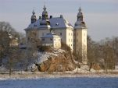

Julmarknad
Julmässan på Ekenäs Slott är en mycket uppskattad julmässa. Det är lätt att förstå för slottet är ett riktigt medeltida sagoslott med tinnar och torn som direkt skapar en känsla av förväntan och spänning hos alla besökare. Under julmässan klär vi hela slottet i julskrud med marschaller och facklor som bidrar till att skapa den riktigt gemytliga julstämningen. Mässan på Ekenäs Slott hålls i stallet, boden, stallängan, ekonomibyggnader, slottskällaren samt flygeln. Här hittar du över 80 av landets skickligaste hantverkare. Slöjdare i trä och halm står sida vid sida med keramiker och textilhantverkare. Här hittar alla något till släktingen eller vännen som "redan har allt". En julmässa är dock så mycket mer än saker.
Öppettider 2017:
torsdag 16 nov. kl 12-21
fredag 17 nov. kl 11-20
lördag 18 nov. kl 10-18
söndag 19 nov. kl 10-17
Entré: 80:-/pers, barn under 12 år fri entré i målsmans sällskap. För större grupper sker bokning av marknadsentré och café genom Svenska slottsmässor.
Guidad slottsvisning med tema "blomsterslottet": Guidning av slottet sker flera gånger per timme, det är drop-in och behöver inte förbokas. 40 kr/person från 16 år, barn 8-15 år 20 kr, mindre barn gratis. Barnspökvandring flera gånger per dag 40 kr/person.
Bokning för grupper sker genom Svenska Slottsmässor: 0490-258492 eller hkanp@svenska-slottsmassor.se